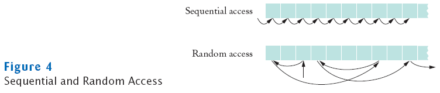

Random Access vs. Sequential Access
- Sequential access
- A file is processed a byte at a time
- It can be inefficient
- Random access
- Allows access at arbitrary locations in the file
- Only disk files support random access
- System.in and System.out do not
- Each disk file has a special file pointer position
- You can read or write at the position where the pointer is
